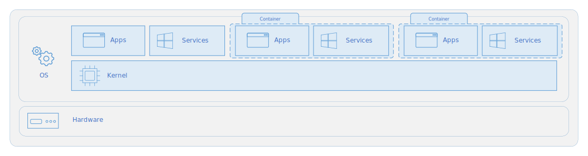
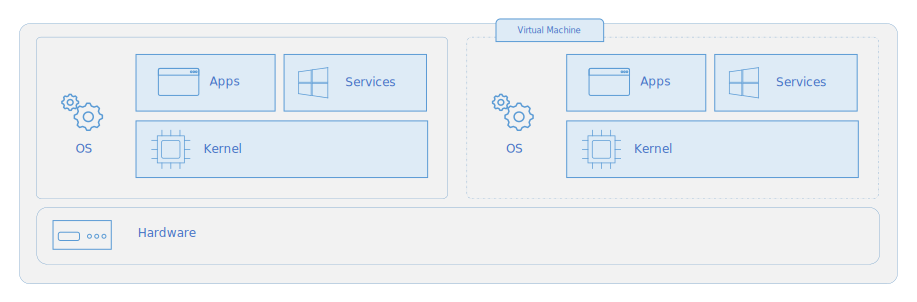

Docker
Images & Containers
Containerization is an approach to software development in which an application or service, its dependencies, and its configuration (abstracted as deployment manifest files) are packaged together as a container image.
Just as shipping containers allow goods to be transported by ship, train, or truck regardless of the cargo inside, software containers act as a standard unit of software deployment that can contain different code and dependencies. Containerizing software this way enables developers and IT professionals to deploy them across environments with little or no modification.
Containers also isolate applications from each other on a shared OS. Containerized applications run on top of a container host that in turn runs on the OS. Containers therefore have a much smaller footprint than virtual machine (VM) images.
In short, containers offer the benefits of isolation, portability, agility, scalability, and control across the entire application lifecycle workflow.
Containers vs Virtual Machines
A container runs natively on Linux and shares the kernel of the host machine with other containers. It runs a discrete process, taking no more memory than any other executable, making it lightweight.
By contrast, a virtual machine (VM) runs a full-blown "guest" operating system with virtual access to host resources through a hypervisor. In general, VMs incur a lot of overhead beyond what is being consumed by your application logic.
 
Docker Terminology

Container image: A package with all the dependencies and information needed to create a container. An image includes all the dependencies (such as frameworks) plus deployment and execution configuration to be used by a container runtime. Usually, an image derives from multiple base images that are layers stacked on top of each other to form the container’s filesystem. An image is immutable once it has been created.
Dockerfile: A text file that contains instructions for building a Docker image. It’s like a batch script, the first line states the base image to begin with and then follow the instructions to install required programs, copy files, and so on, until you get the working environment you need.
Build: The action of building a container image based on the information and context provided by its Dockerfile, plus additional files in the folder where the image is built. You can build images with the following Docker command: docker build
Container: An instance of a Docker image. A container represents the execution of a single application, process, or service. It consists of the contents of a Docker image, an execution environment, and a standard set of instructions. When scaling a service, you create multiple instances of a container from the same image. Or a batch job can create multiple containers from the same image, passing different parameters to each instance.
Volumes: Offer a writable filesystem that the container can use. Since images are read-only but most programs need to write to the filesystem, volumes add a writable layer, on top of the container image, so the programs have access to a writable filesystem. The program doesn’t know it’s accessing a layered filesystem, it’s just the filesystem as usual. Volumes live in the host system and are managed by Docker.
Tag: A mark or label you can apply to images so that different images or versions of the same image (depending on the version number or the target environment) can be identified.
Multi-stage Build: Is a feature, since Docker 17.05 or higher, that helps to reduce the size of the final images. For example, a large base image, containing the SDK can be used for compiling and publishing and then a small runtime-only base image can be used to host the application.
Repository (repo): A collection of related Docker images, labeled with a tag that indicates the image version. Some repos contain multiple variants of a specific image, such as an image containing SDKs (heavier), an image containing only runtimes (lighter), etc. Those variants can be marked with tags. A single repo can contain platform variants, such as a Linux image and a Windows image.
Registry: A service that provides access to repositories. The default registry for most public images is Docker Hub (owned by Docker as an organization). A registry usually contains repositories from multiple teams. Companies often have private registries to store and manage images they’ve created.
Multi-arch image: For multi-architecture, it’s a feature that simplifies the selection of the appropriate image, according to the platform where Docker is running.
Docker Hub: A public registry to upload images and work with them. Docker Hub provides Docker image hosting, public or private registries, build triggers and web hooks, and integration with GitHub and Bitbucket.
Azure Container Registry: A public resource for working with Docker images and its components in Azure. This provides a registry that’s close to your deployments in Azure and that gives you control over access, making it possible to use your Azure Active Directory groups and permissions.
Docker Trusted Registry (DTR): A Docker registry service (from Docker) that can be installed on-premises so it lives within the organization’s datacenter and network. It’s convenient for private images that should be managed within the enterprise. Docker Trusted Registry is included as part of the Docker Datacenter product. For more information, see Docker Trusted Registry (DTR).
Docker Compose: A command-line tool and YAML file format with metadata for defining and running multi-container applications. You define a single application based on multiple images with one or more .yml files that can override values depending on the environment. After you’ve created the definitions, you can deploy the whole multi-container application with a single command (docker-compose up) that creates a container per image on the Docker host.
Cluster: A collection of Docker hosts exposed as if it were a single virtual Docker host, so that the application can scale to multiple instances of the services spread across multiple hosts within the cluster. Docker clusters can be created with Kubernetes, Azure Service Fabric, Docker Swarm and Mesosphere DC/OS.
Orchestrator: A tool that simplifies the management of clusters and Docker hosts. Orchestrators enable you to manage their images, containers, and hosts through a command-line interface (CLI) or a graphical UI. You can manage container networking, configurations, load balancing, service discovery, high availability, Docker host configuration, and more. An orchestrator is responsible for running, distributing, scaling, and healing workloads across a collection of nodes. Typically, orchestrator products are the same products that provide cluster infrastructure, like Kubernetes and Azure Service Fabric, among other offerings in the market.
Docker CLI
docker run
Warn:
<image>must be last argument
docker container
docker image
| Bash | |
|---|---|
docker build
| Bash | |
|---|---|
docker push
| Bash | |
|---|---|
Dockerfile
CMD vs ENTRYPOINT
CMD is used to provide all the default scenarios which can be overridden. Anything defined in CMD can be overridden by passing arguments in docker run command.
ENTRYPOINT is used to define a specific executable (and it's arguments) to be executed during container invocation which cannot be overridden.
The user can however define arguments to be passed in the executable by adding them in the docker run command.
Docker Multi-Stage Build
With multi-stage builds, it's possible to use multiple FROM statements in the Dockerfile. Each FROM instruction can use a different base, and each of them begins a new stage of the build.
It's possible to selectively copy artifacts from one stage to another, leaving behind everything not wanted in the final image.
Networking
Starting container networks: bridge (default), none, host.
| Bash | |
|---|---|
- Bridge: Private internal network created by Docker.
All containers ara attached to this network by default and get an IP in the
172.17.xxx.xxx-172.12.xxx.xxxseries.
Containers can access each other by using the IP172.17.0.1.
It is possible to create multiple sub-networks in the bridge network to isolate groups of containers from each other. - Host: Removes any network isolation between the host and the containers. Cannot run multiple containers on the same port.
- None: Containers are not attached to a network and cannot access other containers or the external network.
Note: Mapping
host-gatewayto an hostname allows the container to reach the host network even with networks types different fromhost
User-defined Networks
| Bash | |
|---|---|
Embedded DNS
Docker has an internal DNS that allows finding other container by their name instead of their IP. The DNS always runs at the address 127.0.0.11.
Docker Storage
File System
| Bash | |
|---|---|
Copy-On-Write
To modify a file during while the container runs docker creates a local copy in the specific container and the local copy will be modified.
Volumes
volume mounting: create a volume under the docker installation folder (/var/lib/docker/volumes/).
bind mounting: link docker to an exiting folder to be used as a volume.
| Bash | |
|---|---|
Docker Compose
Compose is a tool for defining and running multi-container Docker applications. With Compose, you use a YAML file to configure your application’s services. Then, with a single command, you create and start all the services from your configuration.
Using Compose is basically a three-step process:
- Define the app’s environment with a
Dockerfileso it can be reproduced anywhere. - Define the services that make up your app in
docker-compose.ymlso they can be run together in an isolated environment. - Run
docker-compose upand Compose starts and runs the entire app.